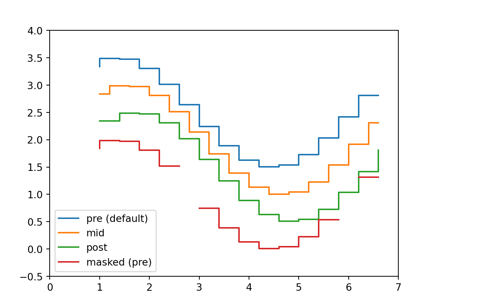

Ch. 9
022d841… move fixed equations to ch 8
# step demo
# https://matplotlib.org/gallery/lines_bars_and_markers/step_demo.html#sphx-glr-gallery-lines-bars-and-markers-step-demo-py
import numpy as np
from numpy import ma
import matplotlib.pyplot as plt
x = np.arange(1, 7, 0.4)
y0 = np.sin(x)
y = y0.copy() + 2.5
plt.step(x, y, label='pre (default)')
y -= 0.5
plt.step(x, y, where='mid', label='mid')
y -= 0.5
plt.step(x, y, where='post', label='post')
y = ma.masked_where((y0 > -0.15) & (y0 < 0.15), y - 0.5)
plt.step(x, y, label='masked (pre)')
plt.legend()
plt.xlim(0, 7)
plt.ylim(-0.5, 4)
plt.show()